Chapter 06 Catalog
NoteGroup: unclassified
File: Chap-06/ash-hang-saw.qmd
Exercise 1 An output transformation has the form \(A \cdot f(\text{input}) + B\) where \(f()\) is a core modeling function. If you want the transformed function to have a maximum output of 100 and a minimum of 0, and the core modeling function naturally ranges from 0 to 1, what should \(A\) be?
d06-ahs-A-ues
Continuing from the previous question, what should \(B\) be?
d06-ahs-B-3xl
File: Chap-06/aspen-pack-blanket.qmd
Exercise 2 The words used to identify the various inputs to a function are called ____.
apb-1-hes
File: Chap-06/aspen-talk-pantry.qmd Status: draft
Exercise 3 In the context of modeling systems, what is the difference between endogenous and exogenous quantities? Give an example of each from the solar panel system diagram in the chapter. Think of a different system, and identify an endogenous and exogenous quantity.
File: Chap-06/avoid-refer-fridge.qmd
Exercise 4 For which core modeling functions is the output bounded on the bottom by zero but unbounded on the top?
arf-1-82kd
File: Chap-06/beech-freeze-roof.qmd Status: sketch
Exercise 5 DO I WANT SOME SKILL BUILDING EXERCISES FOR FUNCTIONS?
heat_index <- function( <!-- <1> -->
temperature, <!-- <2> -->
humidity <!-- <3> -->
) { <!-- <4> -->
# Algorithm will go here
}- Signals that we are defining a function which will have the name
heat_index(). - First arg is named temperature
- Second arg is named humidity
- Close the parenthesis after
function()and use curly braces to provide a place for the algorithm.
File: Chap-06/birch-cost-stove.qmd Status: sketch
Exercise 6 Show the syntax in several different computer languages, including R, for defining a function. Ask students to translate between traditional math notation and the computer notation, and vice versa, for a list of given functions. For instance, give a makeFun() function and ask for it to be translated into python, Javascript, Mathematic, …
File: Chap-06/boy-begin-shirt.qmd Status: sketch
Exercise 7 Consider the function monthly_payment(principal, interest_rate, years). If you wanted to find out how the monthly payment changes when you vary the loan duration, what would you do?
File: Chap-06/boy-lick-book.qmd Status: sketch
Exercise 8 At what input value does hillside() produce an output of 0.5 (halfway between its minimum and maximum)?
d06-blb-ckw
File: Chap-06/brother-blow-futon.qmd Status: sketch
Exercise 9 The text gives a specific name to the multiplication of two steady functions with different inputs, i.e., \(\text{steady}(x) \times \text{steady}(z)\). What is this term called in statistics?
bbf-1-9dls
File: Chap-06/calf-catch-spoon.qmd Status: sketch
Exercise 10
NoteUsing functions “inside-out”
Someone shopping for a house needs to know what price is affordable to them. Typically, people have a good idea of how much they can pay monthly, but need to translate this into a new form: the principal of the loan what will generate such a payment.
For this purpose, the monthly_payment() function is set up backwards. To use monthly_payment(), you need to know the principal—it will calculate the corresponding monthly payment.
Even so, monthly_payment() can lead you to the answer. You just have to turn it inside out. This involves a simple procedure. Say you can afford a $2500 monthly payment. What is the corresponding principal?
Start by guessing. Could you afford a million-dollar loan? Let’s see:
monthly_payment(1e6, 6, 30)[1] 5995.505No good. The million-dollar loan would cost about $6000 per month. If you completely understood the mechanics of the monthly-payment calculation, you could use algebra to find what principal you can afford.
But you don’t need to understand the function, you just need to be able to use it. Since one million dollars is too rich for your situation, try half-a-million dollars.
monthly_payment(0.5e6, 6, 30)[1] 2997.753Still too much! Keep on trying until you hit the spot.
File: Chap-06/calf-hear-bulb.qmd Status: sketch
Exercise 11 Constructing local functions (unlike square() or cube()) by multiplying hillsides together. This creates a function that levels off rather than running off to infinity.
File: Chap-06/cat-know-scarf.qmd Status: sketch
Exercise 12 Construct the whole QALYs versus cost, with optimal allocation between Natal and Cancer. Turn this into an “average cost” per QALY. Will this have a maximum? Show that near the maximum the function is flat.
I”M NOT SURE the above will work. Find some optimality
File: Chap-06/child-break-spoon.qmd Status: draft
Exercise 13 The graph shows the number of cell phone subscriptions per capita for the whole world.
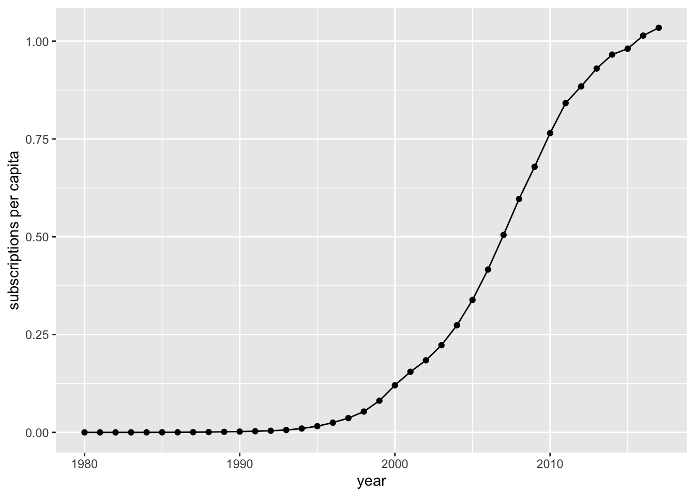
Find sensible values for the input and output-scaling parameters using hillside() to represent the relationship between per capita subscriptions and year.
\[ \text{subscriptions}(\text{year})) \equiv A\, \text{hillside}\left(a (\text{year} - b)\right) + B\]
- What are the input scaling parameters?
cbs-1-wlc
- Which of these is the best value for B (with units subscribers per capita) to align the function with the data?
cbs-2-yw3
- Which of these is the best value for A?
cbs-3-ydux
- Which of these is the right set of units for A?
cbs-4-xjc
- Which of these is the best value for b (with units of years)?
cbs-5-dke
- Which of these is a sensible value for a?
cbs-6-dke
File: Chap-06/deer-form-stove.qmd Status: draft
Exercise 14
The three temperature scales—C, F, and K—define zero degrees differently. This make it hard to do the conversion in one’s head.
The computational chunk that follows provides two functions, FtoC() and FtoK()
- What is the change in C when F increases by 10 degrees?
dfs-1-is4
- What is the rate of change of C with respect to F?
dfs-2-krod
- What is the dimension of the rate of change of C with respect to F?
dfs-3-owe
- What is the rate of change of F with respect to C?
dfs-4-krod
- Extra credit: What is the rate of change of C with respect to K? (Hint: You’ll need to give two temperatures in F, converting them to both C and K.)
dfs-5-s8w
File: Chap-06/doe-give-table.qmd Status: sketch
Exercise 15 Use Boyle’s data as an example. Ask students to try out various ways of building a function that matches the shape of the data.
File: Chap-06/doe-mute-pen.qmd Status: sketch
Exercise 16 Consider this elaboration of the seventh-grade algorithm that works for any S, even if it’s outside the range of the table of perfect squares.
- Store the value 1 under the name
sofar. - If S is inside the range of the table, apply the seventh-grade algorithm. The result of that algorithm times the value of
sofaris the final result. You are done. On the other hand, - If S is larger than the largest entry in the output column of the table, go to step (4). But if S is smaller than the smallest entry in the output column of the table, go to step (5).
- Replace S with S/100 and replace
sofarwithsofar/10. Continue at step (2). - Replace S with 100\(\times\) S and
sofarwith10*sofar. Continue at step (2).
Follow the algorithm to:
- Find the square root of 78,294.
- Find the square root of 0.0013
File: Chap-06/dolphin-enjoy-kitchen.qmd
Exercise 17 Consider this plot of the hillside function:
- What R function is being used to make the plot?
dek-1-gmek
- Immediately following the name of the function, there is an opening parenthesis. The matching closing parenthesis is at the very end of the command. In R (as in many computer languages) the arguments to the function are contained inside the parentheses. If there is more than one argument, successive arguments are separated by commas. How many arguments are there to
slice_plot()?
dek-2-z38d
The first argument to slice_plot() tells which function you want to graph. In the example, the first argument is hillside(z) ~ z. This is called a ☞ tilde expression ☜ so named because the tilde character (~) appears.
| Left | Middle | Right |
|---|---|---|
hillside(z) |
~ (tilde) |
z |
The left part of the tilde expression is a formula written in more or less conventional algebraic form. Other examples for this formula:
2*z + 3,osc(z),hillside(z) * osc(z).The right part of the tilde expression gives the name of the input variable. In the example, the name is
z, but you can use whatever name you think appropriate. Note that the formula in (i) must be written in terms of the input-variable name.The middle part of the tilde expression is merely punctuation, but it is essential punctuation. Among other things, the tilde makes clear what are the left and right sides of the tilde expression.
- Suppose that you want to call the input quantity
x. You can easily modify the command to do this, just substitutexforz. In how many places do you have to make the change?
dek-3-jwkd
Focus now on the graphic itself—Figure 1. The name of the input variable appears as a label on the horizontal axis. The label on the vertical axis, in contrast, is just a reminder that we are plotting the output of the function versus the input quantity.
The vertical scale will be created automatically by slice_plot(), taking into account the range of function output values. But the horizontal axis is different: the user specifies this. The numerical extent of the horizontal axis is called the graphics domain.
The second argument to slice_plot() is used for the graphics domain specification.
- What is the graphics domain in Figure 1?
dek-4-p3n2
In the example, the second argument is domain(z = -2:4). The graphics domain specification will always look like this, and uses the R function domain().
- How many arguments does
domain()take in this example?
dek-4-7s2r
There are two punctuation symbols in the argument to domain(). The colon (:) is placed between the two limits to be used for the domain. -2:4 means “minus 2 to 4.” The graphics domain zero to ten would be 0:10. The other punctuation mark is =. To the left of the = goes the name of the input variable. The expression z = -2:4 means “the graphics domain of z is to be -2 to 4.
- Using the “graphing a function” interactive R chunk, write an expression to plot out the function
osc()over the graphics domain 0 to 5. Use whatever you like as the input name. After checking that your expression works, copy the expression into the following answer block.
File: Chap-06/duck-get-futon.qmd Status: sketch
Exercise 18 You are examining a function Projectile_Distance(speed, angle) which calculates how far a ball travels based on the angle it is thrown and the speed at release.
If you slice this function at a fixed release speed, you will have created a function of just one input: angle. A graph of the function can be read to find the input angle required to hit a target exactly 50 meters away.
How many possible answers for angle should you expect to find?
dgf-10eks
File: Chap-06/eagle-rise-laundry.qmd Status: sketch
Exercise 19 HOW TO DRAW GRAPHICS
The anatomy of a function graph. - Graphics frame - graphics domain
Using the slice_plot() command to make graphs over various domains and with different input and output scaling.
File: Chap-06/elbow-leave-jacket.qmd Status: sketch
Exercise 20 Do the calculations to produce the years-saved versus cost function from Figure 13.7. Or maybe just the average years saved, that is, how to compute an expectation value.
File: Chap-06/elephant-sail-mug.qmd Status: sketch
Exercise 21 DRAFT. EXPLAIN THE RELATIONSHIPS BETWEEN osc(), sin(), and cos() in terms of input and output scaling.
File: Chap-06/elm-rise-fridge.qmd Status: sketch
Proposition 1 The text says,
“Previous examples in this book have pointed out situations where rates, as in dollars-per-QALY, are more informative that single quantities. But it does not seem obviously wrong to favor the save-more-QALYs (a) argument over the save more dollars-per-QALY (b).”
Discuss this in class.
File: Chap-06/elm-teach-spoon.qmd Status: draft
Exercise 22 The function as.Date() takes an integer and an “origin” date to calculate the date the given number of days from the origin. For instance:
- Part I
- Most years have 365 days, but leap years have 366. Was 1900 a leap year?
computing-leap-year
- Part 2
- Modify the above chunk to figure out if year 2000 was a leap year. How about year 2100?
computing-leap-year-2
- Part 3
- To judge from the output of the following chunk, January is not 30 days long.
Add in 11 more similar lines, one for each calendar month, and look at the output to figure out which months are 30 days long.
File: Chap-06/fawn-go-blanket.qmd Status: sketch
Exercise 23
slice_plot(exp2(t) ~ t, domain(t=1:20)) |>
gf_refine(scale_y_log10(n.breaks = 10))
slice_plot(1/t ~ t, domain(t=0.1:100)) |>
gf_refine(scale_y_log10(n.breaks = 10),
scale_x_log10(n.breaks = 10))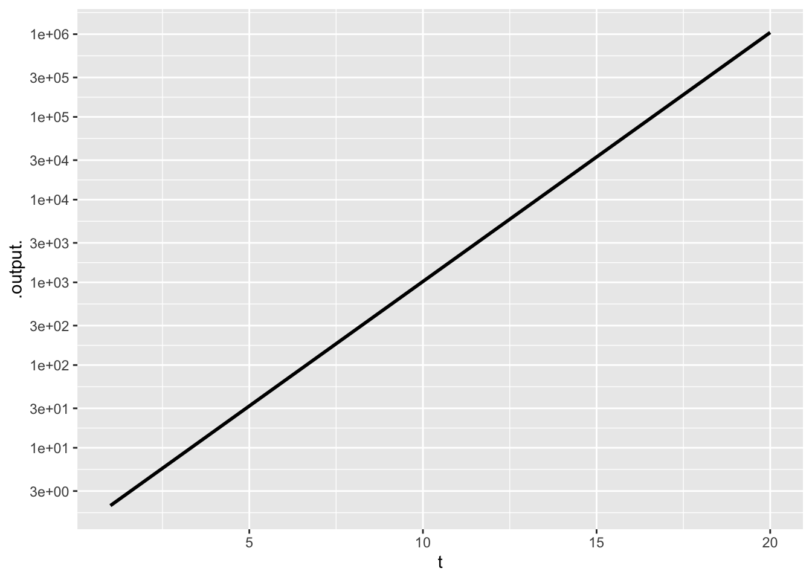
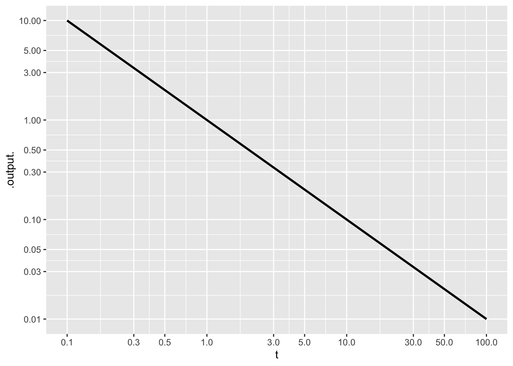
File: Chap-06/finch-ring-magnet.qmd
Exercise 24 The function hillside() …
d06-frm-clw
File: Chap-06/finger-speak-ship.qmd Status: draft
Exercise 25 Classroom ACTIVITY: Talk about piecewise models. Fit the doubling function to the pre-crisis data. Up through the 1960s, a doubling time of 12 years seems about appropriate.
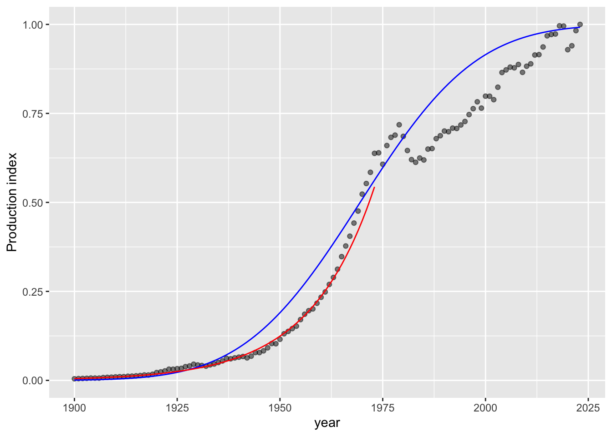
The doubling function (in red) works pretty well up through 1962 with a doubling time of 10.8 years. But after that oil production increased at a rate faster than that doubling rate. [Note that 10.8 years doubling corresponds to a growth rate of 6.7 % per year.]
Here’s a graph of GDP growth. 6% growth during the first half of the 20th century looks pretty reasonable, but it’s down to about half that in the past 50 years.
File: Chap-06/fir-wish-table.qmd
Exercise 26 To double a quantity means to multiply it by 2. Trebling means multiplying by 3. And you’ve probably heard of “quadrupling,” which is multiplication by 4.
If you repeatedly double a quantity, it will eventually get quite big. For instance, Table 1 shows growth from a starting quantity of 1 as it is successively doubled.
| Times doubled | Quantity | Exponent notation |
|---|---|---|
| 0 | 1 | 20 |
| 1 | 2 | 21 |
| 2 | 4 | 22 |
| 3 | 8 | 23 |
| 4 | 16 | 24 |
| 5 | 32 | 25 |
| 6 | 64 | 26 |
| 7 | 128 | 27 |
| 8 | 256 | 28 |
| 9 | 512 | 29 |
| 10 | 1024 | 210 |
| \(\vdots\) | \(\vdots\) | |
| 20 | 1,048,576 | 220 |
| \(\vdots\) | \(\vdots\) | |
| 30 | 1,073,741,824 | 230 |
| \(\vdots\) | \(\vdots\) |
Now imagine a situation where there is a quantity that doubles every day. For instance, this might be the amount of algae in a lake during an “algal bloom.” If the lake had 1 gm of algae on day zero, it would have 2 gm on day one, 4 gm on day two, and so on. By day 10, the biomass of the algal bloom would be 1024 gm, that is, just over 1 kg. Wait another 10 days, there will be 1,048,567 gm, that is, more than 1000 kg. This pattern of growth is called exponential growth.
Why exponential growth? In the third column of ?@tbl-2-exponential the quantities are written using exponents. For instance, in 26, the exponent is 6. In terms of the algal bloom, the number 23 is the biomass of algae on day 3. Similarly, 25 is the biomass on day 5. In this exponential growth, the exponent increases steadily by 1 each day. But the biomass is 2exponent and grows quickly and at an every-growing rate.
- What is the rate of change of biomass with respect to time, looking at time 5 to 6? Remember, the change in biomass will be on top in the ratio, the change in time (we asked about 1 day).
fwt-1-2kdw
- What is the rate of change of biomass with respect to time over the interval day 8 to 9?
fwt-2-2kdw
It’s very convenient for the purposes of this problem that the algal biomass doubles with every new day. In reality, however, the doubling time would depend on things like the temperature or the oxygen or mineral content of the water.
Suppose that the doubling time for algae is 3.5 days. How many days would it take for the biomass to reach 1024 gm (that is, about 1 kg)?
fwt-3-3lse
File: Chap-06/fox-lie-plant.qmd Status: draft
Exercise 27 Try the heat_index() function from Chap. 6 (code is in that chaper’s sources) with out-of-bounds arguments like T = 115°F and RH = 80% (and ask the students to pull other out-of-bound inputs from the table printed in the chpater).
Talk about function domains.
Give them the updated model to work with and see what you get with the formerly out-of-bounds inputs. Mention that a revised formula is needed because it is now common to see high temperatures that, in 1947 when the original paper was written, were rare.
Comment on why revision is a natural part of model building.
1 Step 2: Install the official UC Berkeley heat index package from GitHub
remotes::install_github(“davidromps/heatindex”)
2 Step 3: Load and run the model (Inputs require Kelvin or Celsius)
library(heatindex)
3 Note: The function uses standard SI units.
4 For example: 35°C (95°F) and 50% relative humidity:
temp_celsius <- 35 rh_percentage <- 50
5 Calculate the Berkeley Corrected Heat Index
berkeley_hi <- heatindex(t = temp_celsius, rh = rh_percentage)
print(paste(“Berkeley Heat Index (°C):”, berkeley_hi))
File: Chap-06/frog-wish-bolt.qmd Status: draft
Exercise 28 DRAFT. Functions with the shape of hill() are, in general, called sigmoidal functions. This means S-shaped; sigma is the Greek equivalent of S. Show the logistic function, which has a simpler formula and is also useful in applications. In biochemistry, there is a Hill() function, which generalizes hillside() but is named after Archibald V. Hill.
File: Chap-06/goat-dive-painting.qmd Status: sketch
Exercise 29 ACTIVITY: Find a pair of inputs for the heat-index function that produces an output of 90◦F. Now lower the humidity by about 10 percentage points; the function output should decrease. At the new humidity, can you find a new temperature input that produces an output of 90◦F.
File: Chap-06/hyena-dig-pencil.qmd Status: draft
Exercise 30 DRAFT: Work through the relationships between exp(), exp2(), and exp10(), and their respective log functions.
File: Chap-06/kangaroo-hurt-bowl.qmd
Exercise 31 Suppose you want to model oil production using hillside(), and the data shows production reached half its maximum value around the year 1970. In the input transformation \(a(\text{year} - q_0)\), what value should \(q_0\) have?
d06-khb-oil
File: Chap-06/kitten-sing-ring.qmd
Exercise 32 The graph shows one of the core modeling functions but with either input scaling, output scaling, or none.
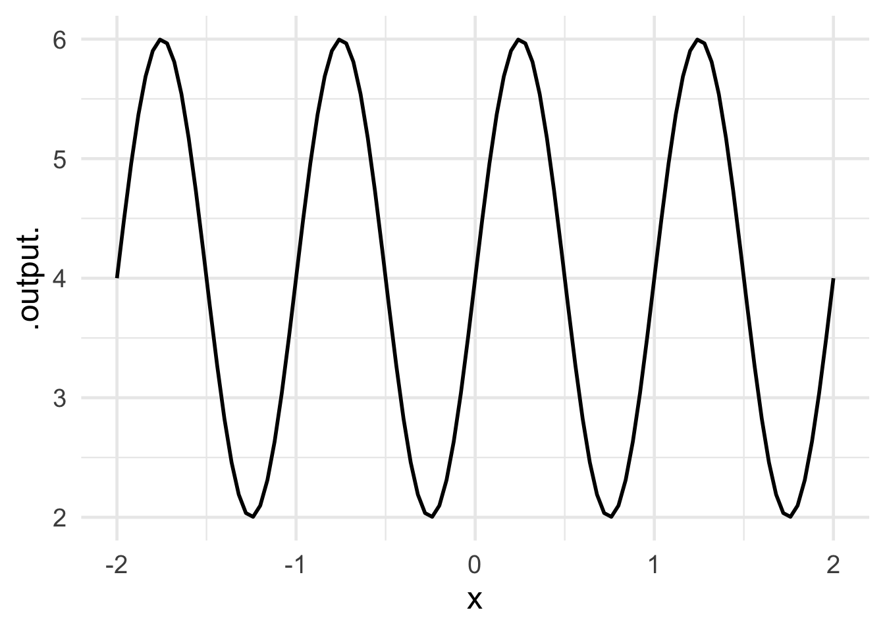
File: Chap-06/lamb-speak-rug.qmd Status: draft
Exercise 33 The hill() function is used extensively to represent the relative probabilies of random outcomes whose values tend to cluster about a specified mean. (hill() is used so extensively that it’s often called the “normal distribution.”)
For each of these depictions of the normal distribution, figure out what input scaling was used, that is, what are the values of \(a\) and \(q_0\) in the expression hill(\(a (\text{size} - q_0)\)).
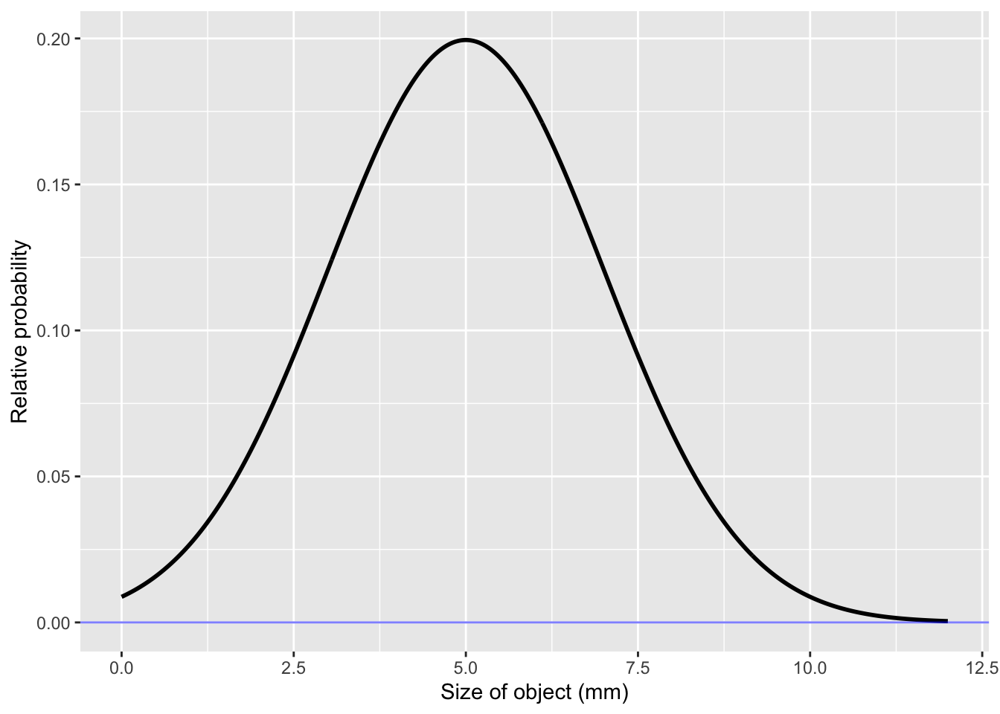
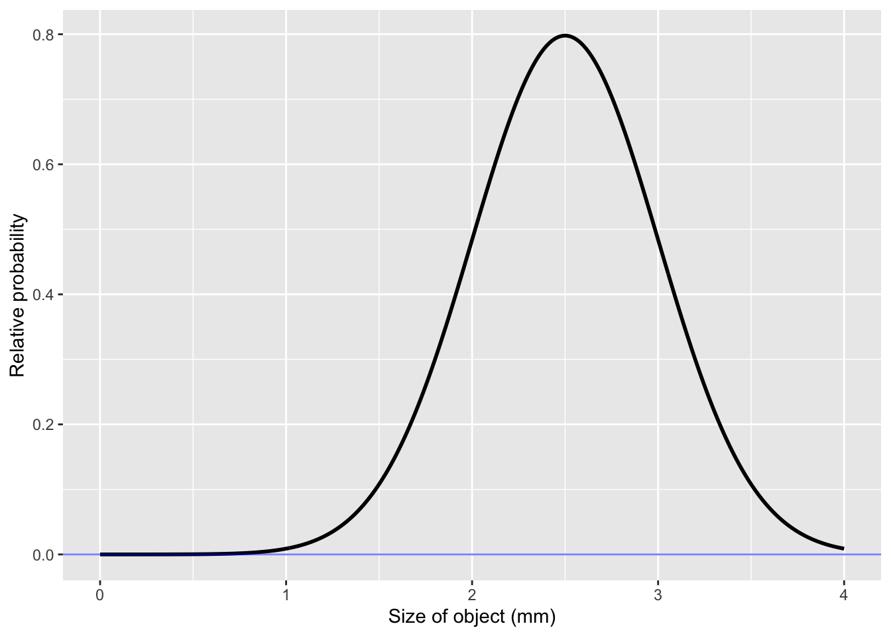
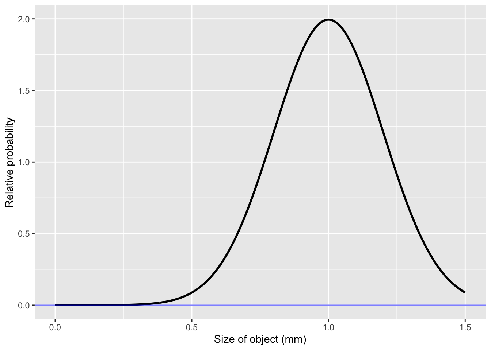
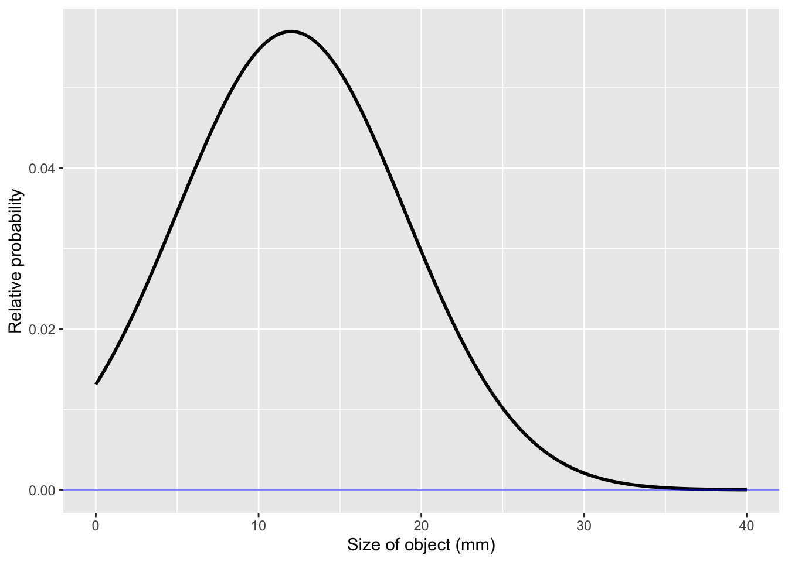
File: Chap-06/leg-fight-stair.qmd Status: sketch
Exercise 34 What’s the distinction between an “argument” and an “input”?
File: Chap-06/lion-have-boat.qmd
Exercise 35 Some core modeling functions have a bounded output, that is, the output has finite maximum and minimum values. Pick the one that does not fit into this category.
lhb-1-k32
File: Chap-06/lion-ride-spoon.qmd Status: draft
Exercise 36 FIX THIS UP AS AN EXERCISE
Often, you will want to store a number or the result of a computation for later reference. There is a simple syntax for this that involves a name and the storage arrow <-. Storage names in R can be made from letters as well as the underscore (_) character and the digits 0 through 9. Names must always start with a letter and they can never contain spaces or other punctuation. For instance:
Once you have stored something under a name, you use the name to refer to the stored value. Try the following:
File: Chap-06/maple-burn-knife.qmd
Exercise 37 Of twos and tens
exp2() is an exponential function, but it is by no means the only one. The characteristic of exp2() that makes it exponential is that increasing the input by one always produces an output that is bigger by a factor of two. For instance:
exp2(3.5)[1] 11.31371exp2(4.5)[1] 22.62742exp2(5.5)[1] 45.25483The other exponential functions behave similarly. That is, increasing the input by 1 increases the output by a factor of ____? The blank (___) is the number that characterizes the exponential function.
For instance, we can imagine an exponential function where an increase in the input by 1 produces an increase in output by 10-fold. There is no standard name for this 10-fold exponential function, so we will invent one just for this problem: the “tenfold()” function.
tenfold(0.7)[1] 5.011872tenfold(1.7)[1] 50.11872tenfold(2.7)[1] 501.1872- Based on the pattern you observe above for tenfold(), what will be the output when the input is 4.7?
- As you know, 0.7 - 1 = -0.3. Keeping that in mind, what will be the output from tenfold(-0.3)?
All the exponential functions are merely input scaled versions of doubling(). For instance, tenfold(x) is the same as doubling(3.3219281 * x):
tenfold(4.2)[1] 15848.93exp2(3.3219281 * 4.2)[1] 15848.93Things work out the other way, too.
exp2(6.92)[1] 121.0954tenfold(6.92 / 3.3219281)[1] 121.0954What’s special about 3.3219281? It is the amount of doublings that leads to an output of 10:
exp2(3.3219281)[1] 10We can find the special number just by asking how many doublings lead to a ten-fold increase:
log2(10)[1] 3.321928History might have followed a path where tenfold() would be the standard exponential function. But there is no strong reason to change now, since exp2() and log2() do everything that tenfold() and tenfoldings() can do. Calculations with paper and pencil would be easier with tenfold() and tenfoldings(). For example,
log2(1000)[1] 9.965784tenfoldings(1000)[1] 3- What is the output of tenfoldings(1000000)? mbk-c-dwld
While everyday people might find it easier to work with tenfold() and tenfoldings(), mathematicians and many scientists routinely use another exponential function named exp(), whose output increases by 2.71828182846-fold whenever the input increases by 1.
Using 2.71828182846-fold might seem crazy, but there are good reasons for it, at least for those heavily involved with quantitative thinking. For instance, the rate of change of exp(x) with respect to x is exactly exp(x). And, delving into the world of “imaginary” numbers used by mathematicians, physicists, and some engineers, there is the remarkable fact that exp(3.1415926535i) gives -1.
Just as exp2() has log2() to convert output into input, and tenfold() has tenfoldings() to do the same job, exp() has a function that we might call “expings()”. For instance:
exp(-2.302585)[1] 0.1expings(0.1)[1] -2.302585The official name for the expings() function is the “natural logarithm function,” written \(\ln()\) in print and log() in almost all computer languages. The official names for log2() and tenfoldings() are, in computer languages, log2() and log10().
There’s no right answer to the following question. We’re just interested in your opinion on the matter.
In your heart, which would you like to be the standard exponential function?
mbk-in-your-heart
Keep in mind that these are all exponential functions and differ only by the amount of input scaling.
File: Chap-06/maple-send-ship.qmd
Exercise 38 Heavier individuals burn more calories due to the increased energy needed to move their bodies, while faster paces and inclines require more exertion, boosting calorie expenditure. More fit individuals tend to be more efficient, burning fewer calories at a given activity level than less fit individuals.
Translate the previous paragraph into a list of the inputs to and output from a function. You don’t have to build the function, but you should give plausible units for the input and output quantities.
File: Chap-06/monkey-meet-laundry.qmd
Exercise 39 The function exp2() …
d06-mml-ldx
File: Chap-06/mouse-bathe-knob.qmd Status: sketch
Exercise 40 MAYBE WE ALREADY HAVE SUCH EXERCISES, BUT just in case …
Cover each of the core modeling functions in turn, showing how to find both the input and output transformation parameters. Point out that for the constant, proportional, and exponential functions, mathematicians generally simplify to a smaller number of parameters.
File: Chap-06/nephew-sit-car.qmd Status: sketch
Exercise 41 Show how functions can be used to implement a relationship and then, if you decide the relationship is different, you can change just the algorithm of the function without having to examine everywhere you use that function.
File: Chap-06/panda-run-magnet.qmd
Exercise 42 Write down an algorithm for adding two numbers, each with 2 digits. You can assume that you already have the algorithm for adding single digits, for instance 7 + 2.
In addition to your algorithm, write down a table that shows the output for adding any digit 0 to 9 to another digit.
File: Chap-06/pig-point-sofa.qmd Status: draft
Proposition 2 (Envisioning functions) It helps to have a concrete mental image of what a function is. One metaphor, which some people find useful, is that a function is a kind of look-up table, as drawn schematically in Table 2. You can use the table to look up the relevant values of the inputs and read off the corresponding value of the output.
| x | y | output |
|---|---|---|
| 5 | 2 | 14.1 |
| 6 | 2 | 14.3 |
| 7 | 2 | 14.1 |
| 5 | 3 | 13.8 |
| 6 | 3 | 12.9 |
| 7 | 3 | 10.7 |
The mathematical conception of function imposes a restriction on the contents. There can never be two rows that have the same values for all the inputs. For instance, in Table 2, it would not be permitted to have another row with inputs (x = 6, y = 2). Another way to say the same thing: Given input values, the output is completely deterministic; no waffling, indecision, or randomness allowed!
Historically, printed look-up tables were an important way to represent functions, and old statistics and applied math books have many pages of such tables.
Another visually compelling image of a function is provided by a now-obsolete technique: nomography. Figure 4 shows an example: the function that takes human height and weight as inputs and produces body-mass index (BMI) as the output.

File: Chap-06/pollen-close-sheet.qmd
Exercise 43 If a quantity is measured in miles per gallon and you need to create a dimensionless input for a core modeling function using the transformation \(a(q - q_0)\), what are the units of parameter \(a\)?
d06-pcs-1
File: Chap-06/reptile-take-socks.qmd
Exercise 44 The function hill() …
d06-rts-qclw
File: Chap-06/seal-talk-room.qmd
Exercise 45 Which core modeling functions have a positive rate of change for all positive inputs?
recip() d06-str-3ks exp2() d06-str-lxe hill() d06-str-8ue hillside() d06-str-lex same() d06-str-cwoxFile: Chap-06/shark-choose-bed.qmd
Exercise 46 Which core modeling function would best describe the outdoor temperature over the course of a single day (rising in the morning, falling in the evening, repeating daily)?
d06-scb-daily
File: Chap-06/sheep-write-jacket.qmd
Exercise 47 For the log2() function:
- What is the output when the input is 8?
- What is the output when the input is 1?
- What input to
log2()gives an output of -2?
File: Chap-06/sister-bite-gloves.qmd
Exercise 48 Match each core modeling function to its characteristic behavior. The function osc() …
d06-sbg-932
File: Chap-06/sister-teach-pen.qmd Status: in progress
The calculator in ?@fig-heat-index-sliders is based on a formula well suited to computers. Can you find a (temperature, humidity) input where the output from the formula is different from the table presented in ?@fig-original-heat-index?
TipAnswer
One such set of inputs is temperature 35 C, humidity 50%. Steadman’s table gives 40 deg. as the output but the calculator gives 41 deg..
..id..
File: Chap-06/snail-dig-pen.qmd
Exercise 49
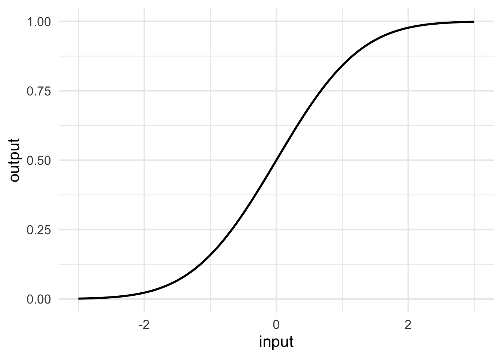
Which core modeling function does this graph show?
sdp-1-dkw
File: Chap-06/spider-hit-fork.qmd
Exercise 50 The graph shows one of the core modeling functions but with either input scaling, output scaling, or none.
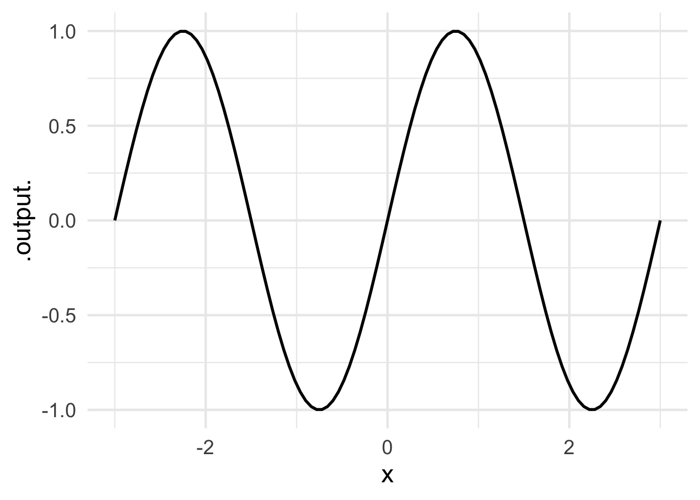
File: Chap-06/spruce-lie-kayak.qmd
Exercise 51 Which core modeling function has an output bounded by 0 and 1?
slk-1-cjs
File: Chap-06/spruce-refer-bulb.qmd
Exercise 52 For the exp2() function …
What is the output value when the input is 0? srb-a-32ld
What is the output value when the input is 1? srb-b-32ld
What is the output value when the input is 2? srb-c-32ld
What is the output value when the input is -1? srb-d-32ld
At what input will the output of exp2() be 1/2? srb-e-32le
Now turn to the closely related log2() function. (Remember that log2() is related to exp2() but they are different functions.)
When the input to log2() is 8, what is the output? srb-f-32ld
When the input to log2() is 4, what is the output? srb-g-32ld
When the input to log2() is 1/2, what is the output? srb-h-32ld
When the output from log2() is -2, what is the input? srb-i-32ld
File: Chap-06/squirrel-put-map.qmd
Exercise 53 Which core modeling functions have a positive rate of change everywhere?
recip() spm-1-3se log2() spm-2-se hill() spm-3-dse hillside() spm-4-y23File: Chap-06/squirrel-type-sofa.qmd
Exercise 54 Which core modeling functions have an output that is unbounded on both the top and the bottom?
sts-1-3cw
File: Chap-06/tiger-blow-shoe.qmd
Exercise 55 Which of the following is not the name of a core modeling function?
d06-tbs-2da
File: Chap-06/tiger-build-stair.qmd
Exercise 56 Chapter 7 described how the gaussian function is often used as a probability distribution function to represent an interval statement. But it might happen that a modeler prefers a distribution that is closer to uniform, like that in Figure 5(b).
- Build a custom function that looks like Figure 5(b). As a hint, here is a riddle: How do you build a hill out of two hillsides?
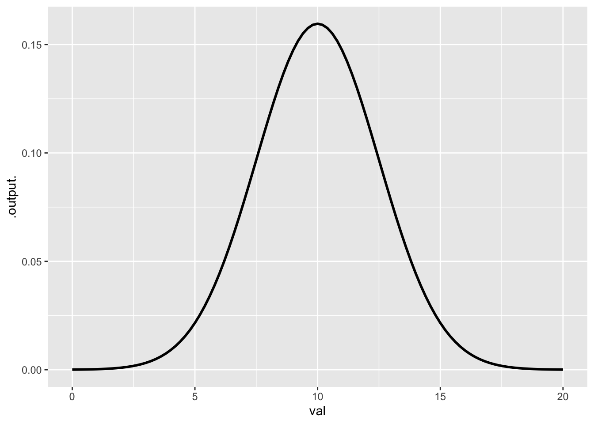
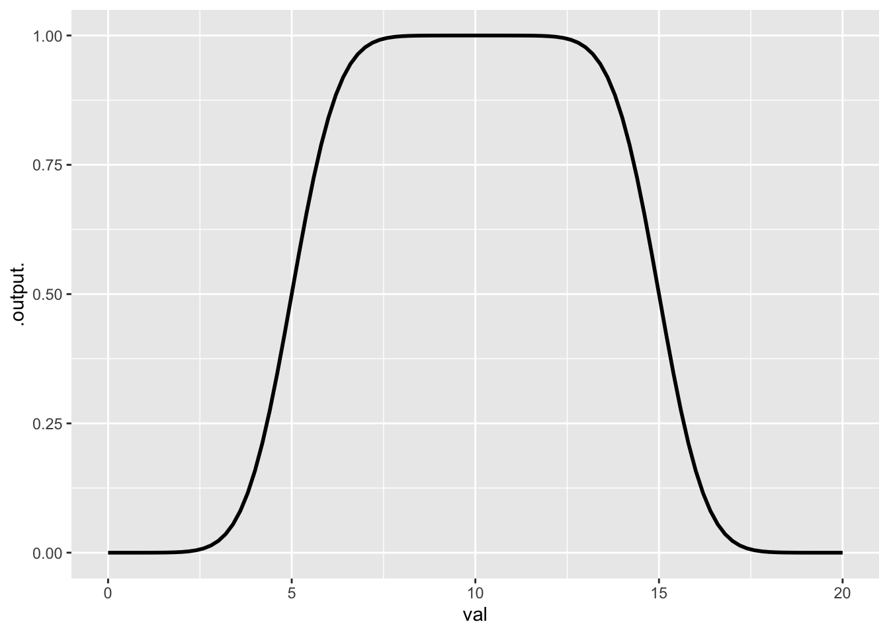
- Using linear combination of two functions, build a custom function that looks like Figure 5(b). As a hint, here is a riddle: How do you build a hill out of two hillsides? We’ve scaffolded the problem: you just have to find appropriate values for the
???in the input scaling, and perhaps change the sign on one of the coefficients of the linear combination.
Copy your function definition here.
- The hillside() function has a parameter
sdthat governs the speed of the transition from zero to one. Modify your function to make the output look more like a uniform distribution running from 5 to 15.
Copy your new function definition here.
File: Chap-06/toe-dig-pencil.qmd
Exercise 57
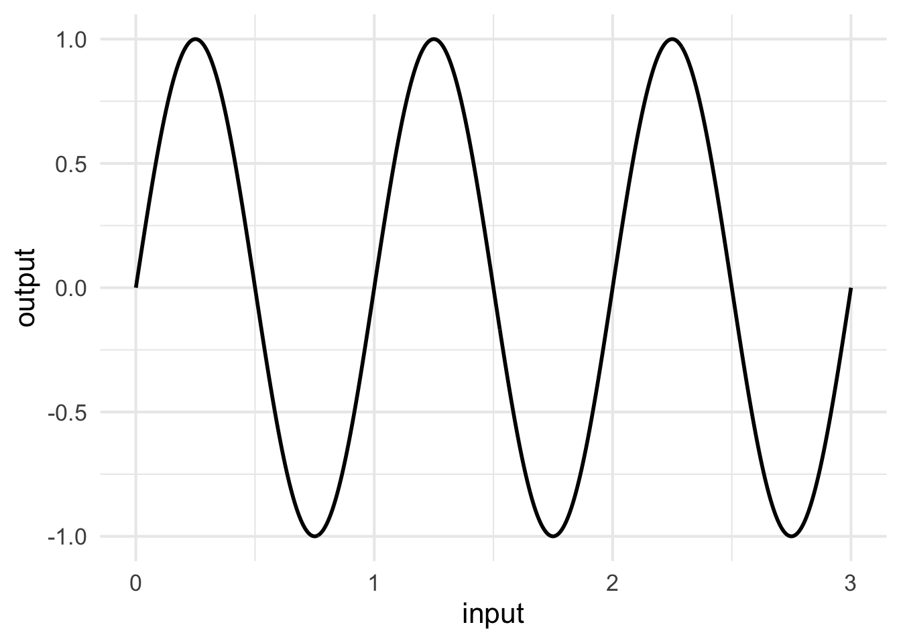
Which core modeling function does this graph show?
tdp-1-lfr